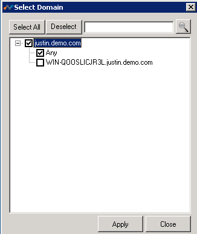
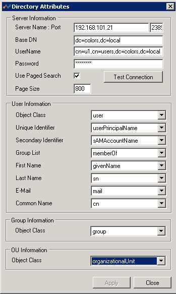
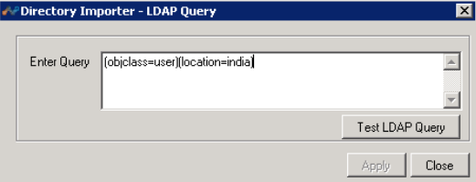
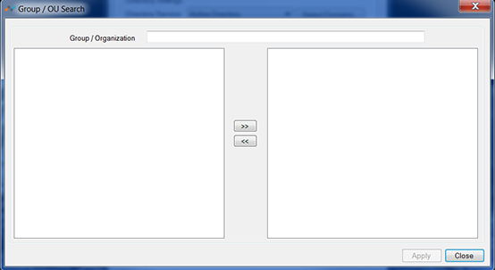
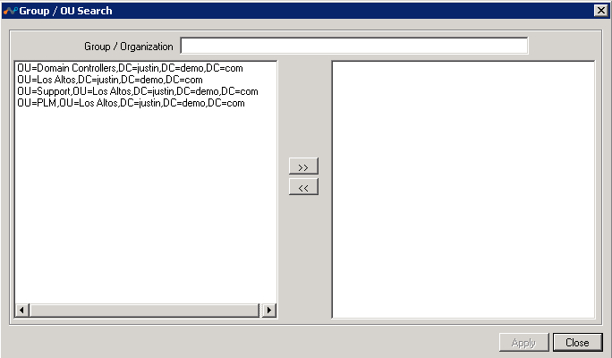

Configure Directory Importer
Directory Importer connects to all the domain controllers (DC) selected in the Select Domains dialog box if the selected Directory Service is Active Directory; otherwise, Directory Importer connects to the LDAP server configured and periodically fetches users and groups information to post that info to your tenant instance in the Netskope cloud. Customers that are using Secure Forwarder and or the Netskope Client can utilize user and group membership information to send invites for Netskope Client installation and to configure cloud app policies.
To watch a video about how you can use email identifiers to import users, click play.
When the Netskope Adapters open, the first tab displayed is for Directory Importer.

The options in this tab are:
Userinfo URL: The URL to synchronize user info with the Netskope cloud. This URL can be obtained from Settings > Tools > Directory Tools in the Netskope tenant UI.
Directory Settings: Includes these options:
Active Directory: Directory Importer automatically detects all of the domains in the forest and starts fetching information. The Select Domain button opens this dialog box so you can select any domains you want to include.
Other Directory Services: Directory Importer connects to the LDAP server specified in the Directory Attributes dialog box, and then starts fetching all the user and group information. Click Set Attributes to open this dialog.
Server Name: Port Host name or IP Address and Port number of the LDAP directory server.
Base DN: Directory root from which the Directory Importer starts the search for users.
Username: The username for the account with rights to read data from the directory server.
Password: The password for the username account entered above.
Use Paged Search: Enables a paged search if the directory server supports it.
Page Size: The page size to be used for search.
Test Connection: After all of the above information is entered, click this button to test the connection and validate the username. On successful, validation, Directory Importer would try to fill User Information, Group Information and OU Information with the class names and attribute names found in the directory schema.
User Information, Group Information and OU Information: The class and attribute names required by Directory Importer to read user information by directory server. If the equivalent attribute names differ in other directory servers from that of Active Directory, you can select the appropriate value from the dropdown lists. When you hover the cursor over an attribute names, the meaning of the attribute is displayed in a popup message.
Connect to Directory Server using SSL: When selected, Directory Importer uses LDAP to connect to a directory server, and communications between Directory Importer and other servers are encrypted.
Filter Options: Includes these options:
Include: When selected, users that are part of the selected Groups or Domains are exported.
Exclude: When selected, users that are part of the Groups or Organizational Unit other than the ones in the filter are exported.
None: No filtering is applied while searching for users (Include & Exclude options are disabled when you select this option). All the users and their groups in the selected scope are uploaded to your tenant instance in the Netskope cloud.
LDAP Query: Select LDAP Query to open this dialog box, which enables filtering on LDAP queries. After enteing a query, click Test LDAP Query to ensure it works.
 Groups: Select Groups to open this dialog box, which contains the names of the directory groups. If specific groups are moved to the right side, details of the users that belong to these groups will be exported to your tenant instance in Netskope cloud. As of release 37.0, nested groups are supported.
 Organization Unit (OU): Select Organization Group to open this dialog box, which contains the names of OUs. If specific OUs are moved to the right side, only details of the user and associated groups that belong to these OUs will be exported to your tenant instance in the Netskope cloud.
 Dynamic Groups: Select Dynamic Groups to open this dialog box, which has the options to specify an LDAP query to create a dynamic groups.

Advanced Settings: Includes these options:
User Info Collect Interval: Enter the interval in minutes that the user details are exported to your tenant instance in the Netskope cloud.
Log Level: Select the granularity and detail level of logs written to the files specified in the Log File Path location. Log levels represents the severity of the message. There are four different log levels, ERROR, WARNING, INFO and DEBUG.
Proxy Settings: Use when an explicit proxy is present in the Directory Importer to Netskope cloud traffic flow.
By default, Directory Importer uses the proxy settings for the user for which the Directory Importer service is installed to communicate with the Netskope Cloud. Alternatively, you can define a proxy setting to be used for Directory Importer that communicates with the Netskope cloud.
Use Internet proxy settings of the Directory Importer user: Uses the proxy settings defined for the user account for which Directory Importer service is installed.
Use PAC file script: Uses the proxy settings defined by the PAC file from the URL entered here.
Proxy Server: Uses the explicit proxy server address and port number entered here.
Manageability: Allows the tenant admin to receive notification if the percentage of users deleted exceeds the number specified.
Additional User Attributes: When Directory Importer contacts an AD or LDAP Server, in addition to getting the standard user information, it also reads the custom attributes added here. Like other information, added, modified, or deleted custom attributes are also sent periodically to the provisioner.
Send User Identity for Proxy Chaining: Select when the Netskope proxy chaining feature is used to steer traffic from the enterprise Bluecoat proxy to Netskope.

Log File Path: Shows the system location where the Directory Importer sends corresponding Netskope logs.
Status: Shows the status of the selected component.
Service Name: Shows the name of the active Directory Importer.